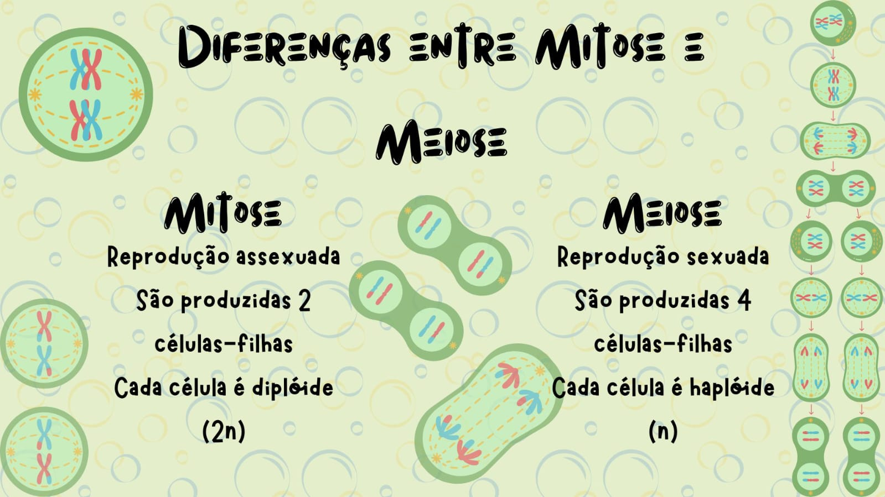

A principal diferença é que a mitose é um processo equacional, que gera duas células geneticamente idênticas. Já na meiose o processo é reducional, pois as quatro células originadas apresentam metade do número de cromossomos da célula-mãe.
Imagem feita por: Ana Luiza
© Ana Luiza, Anna Vitória, Carlos Daniel, Diana e Isabelly (2023)